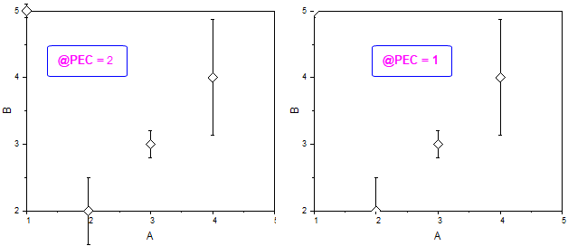
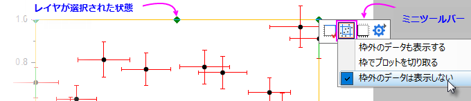
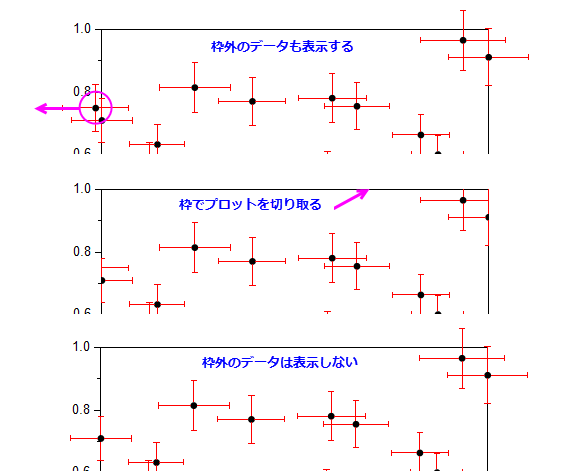

FAQ-1006 レイヤ枠上にあるデータポイント、エラーバー、テキストラベルが切り取られないのはなぜですか？
clip-data-on-graph-edge
最終更新日：2020/3/19
Origin 2019bから、デフォルトで作図の詳細ダイアログの枠でプロットを切り取るにチェックがついています。そして、システム変数@PECで切り替え可能なデータポイントの切り取り方法が2通りあります。
- @PEC=2: 枠上のプロットシンボルとラベルを切り取らない。この場合、データポイントのXY値が軸スケール内にある場合、そのポイントの一部分（エラーバーやラベルなど）が枠外にあっても完全に描画されます。これは、Origin 2020でのデフォルトの動作です。
- @PEC=1: 枠上のシンボルとラベルを切り取る。この場合、軸の線の上から外側にある全データプロットが切り取られます。これは、Origin 2019b および 2020bのデフォルト設定です。

レイヤ枠に対するシンボルの表示方法を変更する方法：
- グラフレイヤ内の空白の部分で一度クリックします。これによりレイヤが選択されます。
- ポップアップミニツールバー内の枠でプロットを切り取るボタンをクリックします。
- 
- レイヤ枠外のものも含めて全てのデータポイント、エラーバー、データラベルを表示するには、枠外のデータも表示するを選択します。
- レイヤ枠ですべての要素（ポイント、エラーバー、ラベル）を正確に切り取るには、枠でプロットを切り取るを選択します。
- レイヤ枠の外側にあるデータポイントは切り取り、中心がレイヤ枠内またはレイヤ枠上にあるデータポイント（エラーバー、ラベルなどを含む）を完全に表示するには、コマンドウィンドウまたはスクリプトウィンドウで、
@PEC=2;を実行して、枠外のデータは表示しないを選択します。
- 
キーワード:枠の切り取り, 枠で切り取り, 境界上のデータ, 軸で切り取り, 一部